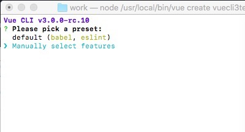
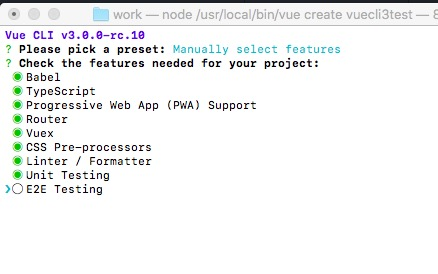
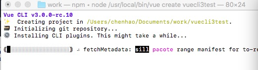
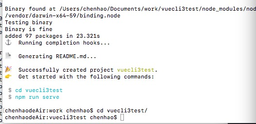

vue cli 2.x时候很多问题都一直被诟病，例如经典的vue init项目后还要进去npm install的多余操作。。而来到3.0时代的vue cli，很大程度上在流程上更规范更方便了。
升级
其实也是重新安装1
2
3
4
5sudo npm install -g @vue/cli
...
vue -V
看到3.0.0就是成功了
创建一个vue项目
1 | vue create vuecli3test |
创建project可以通过vue create来创建，更直观

有默认的模板babel和eslint，还有手动选择特性：

可以看到很多前沿的library都支持了，TypeScript,PWA 都在列。(空格选择，i反选,a全选)


安装完后就可以去项目里面看一下。。pacakge都已经安装好了。。不需要再npm install了
Vue Cli Service
进来看到dev环境也没使用webpack-dev-server了，而是有了自己的服务vue-cli-service1
2
3
4
5
6"scripts": {
"serve": "vue-cli-service serve",
"build": "vue-cli-service build",
"lint": "vue-cli-service lint",
"test:unit": "vue-cli-service test:unit"
},
完美npm run serve就可以开始本地开发了
小结
总的来说这次更新很多东西都规范了，今天有点困，明天有空继续看看还有什么新的东西。